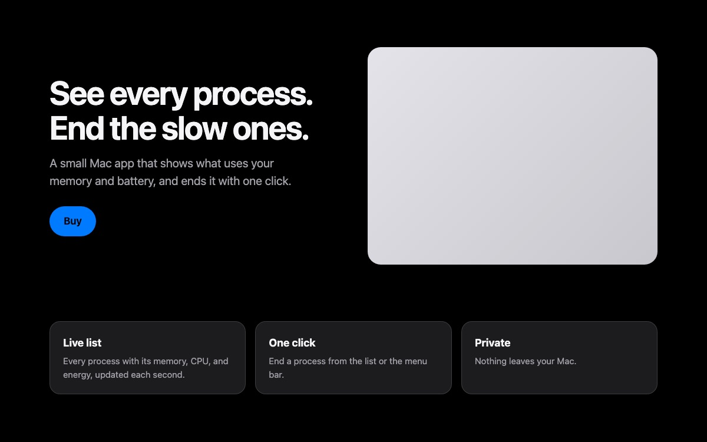
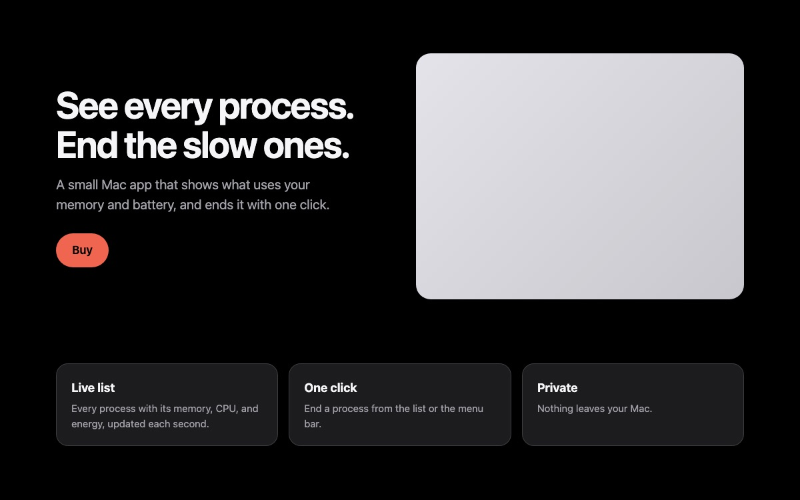
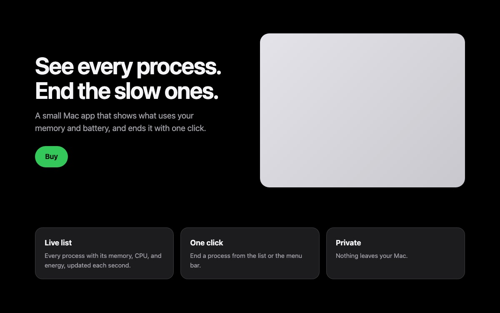

<!-- Local options page example: node serve.mjs examples/choice (images are the demo page, shot per accent color). -->
<main class="k-wrap" data-kit data-views="page" data-round="1">
  <section class="k-part" data-part="Button color">
    <p class="k-kicker">Options</p>
    <h1 class="k-title">Which color should the Buy button use?</h1>
    <p class="k-lead">Pick one, add a comment if you want a change, then press Copy choices and paste it into the chat.</p>
    <div class="k-group" data-group="Button color" data-comment="What to change" data-keep>
      <div class="k-options">
        <div class="k-option" data-option="Blue" data-recommended data-sub="System blue, the color people expect to click">
          
        </div>
        <div class="k-option" data-option="Coral" data-sub="The brand coral, warmer and louder">
          
        </div>
        <div class="k-option" data-option="Green" data-sub="Reads as go, but close to a success state">
          
        </div>
      </div>
    </div>
    <p class="k-hint">Click an image to see it full size.</p>
  </section>
</main>
